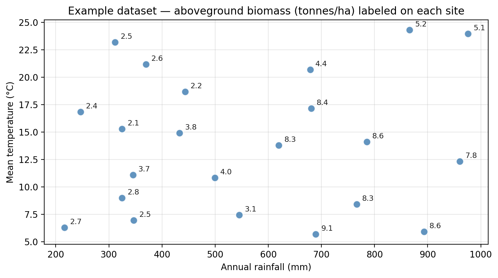
Decision Trees
In this lesson we introduce:
- Decision trees: flexible, interpretable prediction models that partition the predictor space into rectangular regions
- Regression trees: decision trees for predicting a numerical response variable
- Classification trees: decision trees for predicting a categorical class label
- Dealing with overfitting: approaches for controlling model complexity
These notes are based on chapter 8.1 of An Introduction to Statistical Learning with Applications in Python (James et al. 2023). The example datasets are synthetic and were generated with the aid of Claude Code for the purpose of this lesson.
Regression trees
A guiding dataset
We will use a small dataset of 22 ecological survey sites throughout this section. Each site is characterized by:
rainfall— annual precipitation (mm)temperature— mean summer temperature (°C)biomass— aboveground plant biomass (tonnes per hectare), our response variable
The plot below shows the 22 points in the dataset with the biomass measurement annotated for each point.
What is a regression tree?
A regression tree predicts a numerical response by partitioning the predictor space into rectangular regions and assigning a predicted value to each region. It is structured like an upside-down tree, with a root at the top and leaves at the bottom.
The figure below shows a simple regression tree fitted on our example dataset:

Each component of the tree plays a specific role:
- Root node: the top of the tree; contains the first split that applies to the entire dataset.
- Leaf node: a node with no further splits.
- Internal node: a non-leaf node that applies an additional split to a subset of observations.
- Branch: the connection between two nodes, representing the path an observation takes based on the split condition.
The depth of the tree is the number of nodes along the longest path from the root node down to the farthest leaf node.
The predicted value at the leaf is the mean of all training observations that reach this leaf.
Predictions
To predict for a new observation, start at the root and follow the branches based on the split conditions until you reach a leaf. The value at the leaf is the prediction. For example, if we have a new site with rainfall = 430 mm and temperature = 10°C, then:
- Start at the root node: Is rainfall of 430 mm ≤ 583 mm? Yes, so go left.
- On the left node: is temperature of 10°C ≤ 15°C? Yes, so go left.
- We get to a leaf node, no further splits.
- The new site is predicted to have biomass of 3.2 t/ha.
Check-in
Use the regression tree above to predict the biomass for a new site with rainfall = 750 mm and temperature = 20°C. Trace your path from the root to the leaf.
Discussion
We trace the path by checking:
- Start at the root node: Is rainfall of 750 mm ≤ 583 mm? No, so go right.
- The right branch leads directly to a leaf node (no further split in this region).
- The new site is predicted to have 7.4 tonnes/ha.
The observation follows the right (No) branch of the tree because it has high rainfall and does not satisfy the split condition.
Node splits and prediction regions
We mentioned previously that in regression trees, the predicted value at the leaf is the mean of all training observations that reach this leaf. It can be useful to visualize this by seeing how each node in the tree generates a split in the training data.
We begin with our full training dataset:
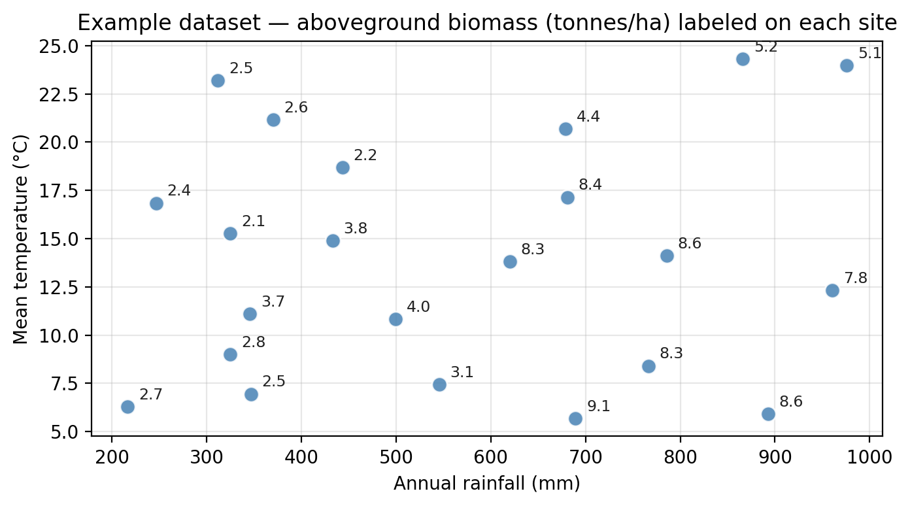
The root node asks whether rainfall ≤ 583 mm.

This creates a vertical division in the predictor space:

The second node then looks at the observations in the left region (rainfall ≤ 583 mm) and asks whether temperature ≤ 15°C.

This adds a horizontal split, but only within the left region:
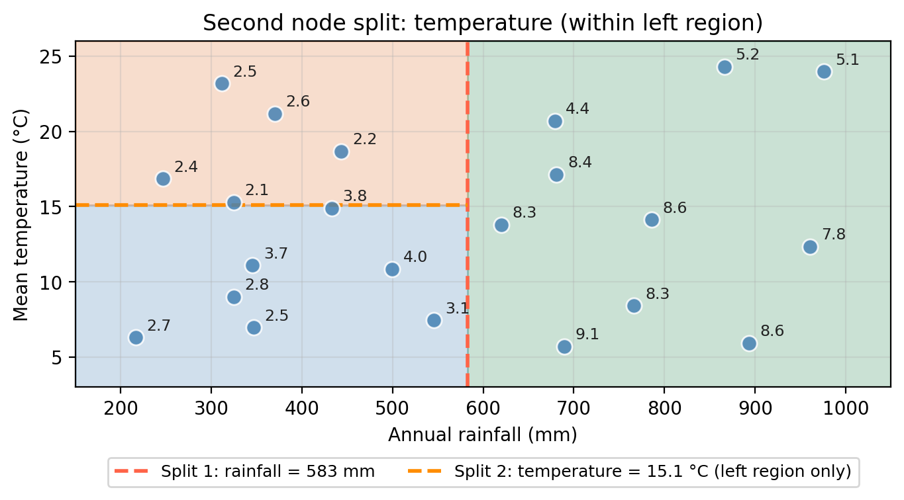
The leaves correspond to the final regions in the predictor space. Each observation is assigned the mean response of the training observations that fall in the same region:
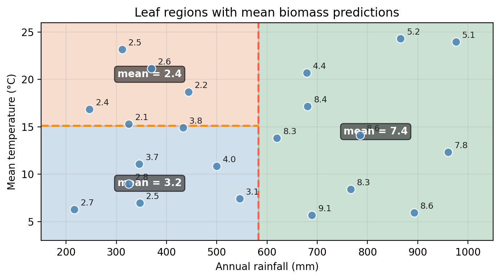
Check-in
The plot below shows another split in the training data. Modify the decision tree diagram to include a node and leaves that represent this new region.
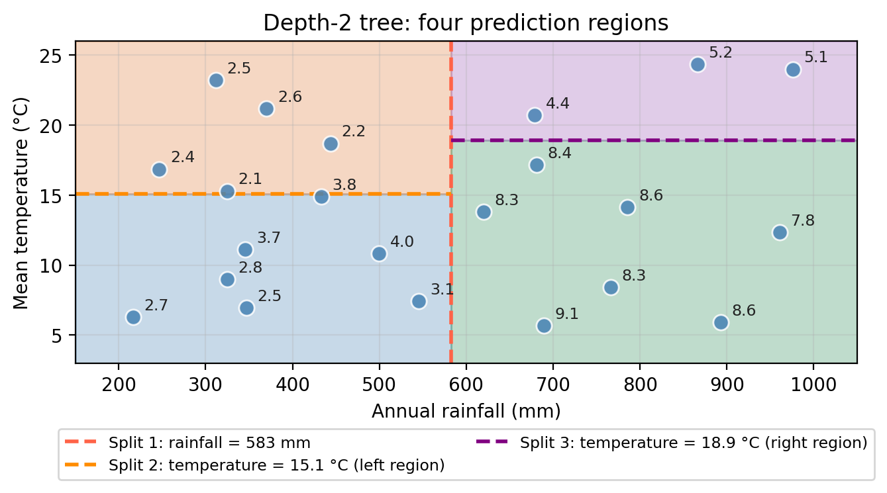
Discussion

In summary and more abstractly, a regression tree is defined by:
Dividing the predictor space: the set of all possible values for \(X_1, X_2, \ldots, X_p\) — into \(J\) non-overlapping rectangular regions \(R_1, R_2, \ldots, R_J\).
Assigning a prediction to each region: for every observation that falls into region \(R_j\), the prediction is the mean of the response values for the training observations in \(R_j\):
\[\hat{y}_{R_j} = \frac{1}{|R_j|} \sum_{i \in R_j} y_i.\]
Fitting a regression tree
Fitting a regression tree means using the training data to find the splits or regions that do a good job at approximating the response variable. We will give an general understanding of how the algorithm finds these splits.
Start with a region \(R_1\) defined by your regression tree and let
\[\hat{y}_{R_1} = \text{mean response of the observations in } R_1.\]
Every other point that falls in \(R_1\) will be assigned \(\hat{y}_{R_1}\) as its prediction.
We can measure how well \(\hat{y}_{R_1}\) estimates the values for the observations in \(R_1\) by calculating
\[\sum_{y_i \in R_j}(y_i - \hat{y}_{R_j})^2.\]
If we calculate this error term for each region \(R_1, \ldots, R_J\) defined by the tree we will get the RSS for the decision tree:
\[RSS = \sum_{j=1}^J\sum_{y_i\in R_j}(y_i - \hat{y}_{R_j})^2.\]
So, for a given tree, we can look at the regions it defines and calculate the RSS as a measure of error.
The regions are then found using recursive binary splitting:
- Starting from the full dataset, at each step the algorithm searches over all predictors and all possible split thresholds to find the single split that most reduces the RSS.
- This process is repeated within each resulting region and…
- Stop once you meet a stopping criterion, e.g.: a maximum depth is reached or a region contains too few observations to split further.
Why “recursive binary splitting”?
Binary because every split creates exactly two child regions. Recursive because the same procedure is applied again within each region. This is also called a greedy algorithm: at each step, the locally best split is chosen without considering whether a different split now might lead to a better tree in future steps.
For example, to create the first node in the tree, the algorithm:
- evaluates every possible split threshold on every predictor and
- chooses the combination that minimizes the total residual sum of squares (RSS) across the two resulting regions.
The figure below shows how multiple rainfall splits would look like and how the RSS changes as we move the split threshold along the rainfall axis:
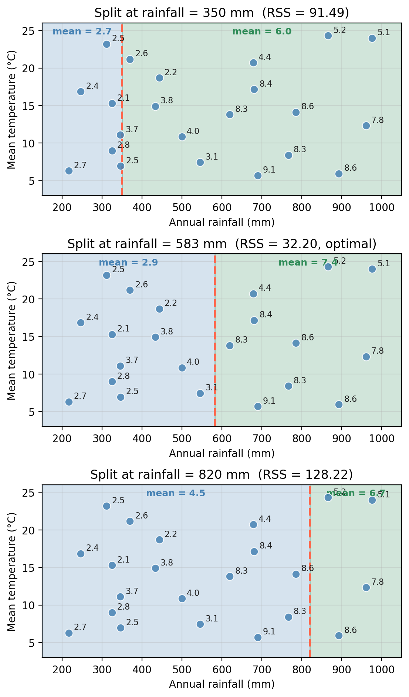
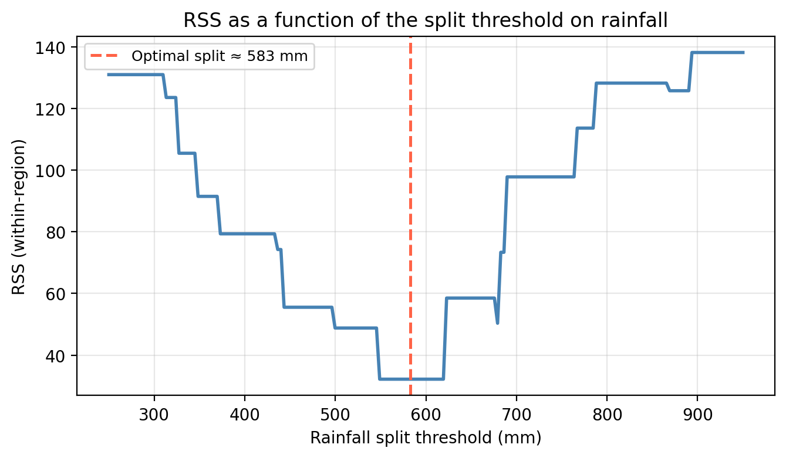
This is how we get a 1-node tree fitted on the example data. On the top we see how the split divides the predictor space; on the bottom, the tree diagram.
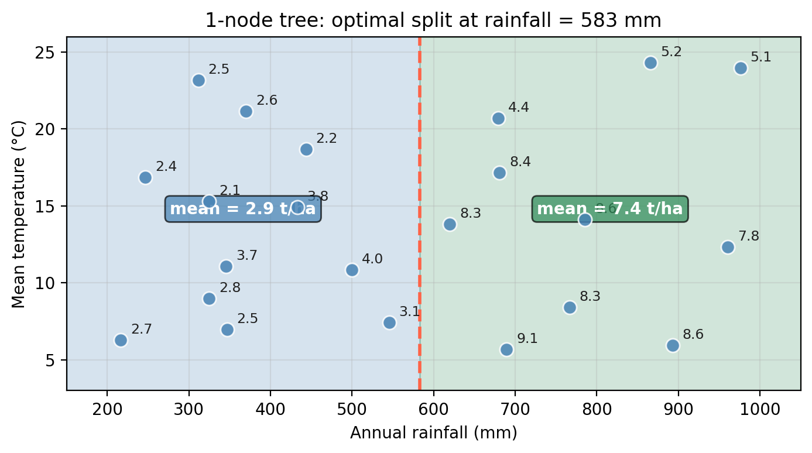
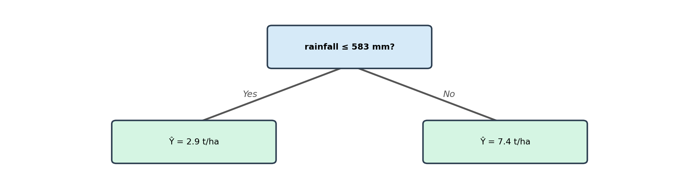
After finding the best first split, the algorithm then considers splitting each of the two resulting regions again. The best second split (evaluated independently within each region) adds a second node to the tree.
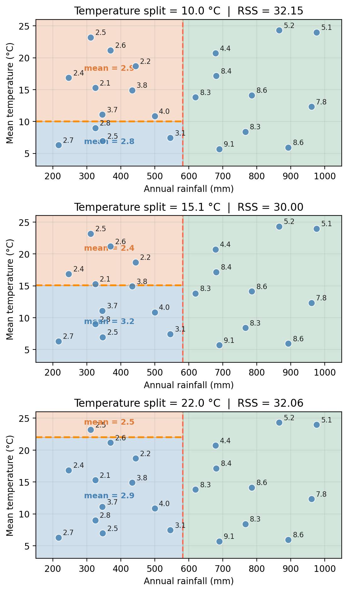
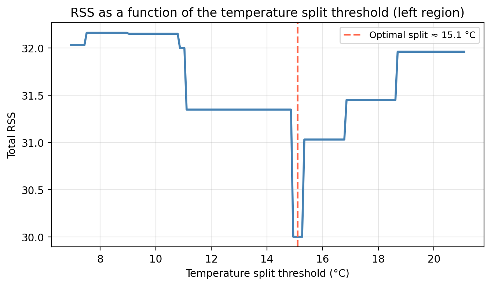
The figure below shows a depth 2 tree, which makes one additional split this time on temperature within one of the rainfall regions:

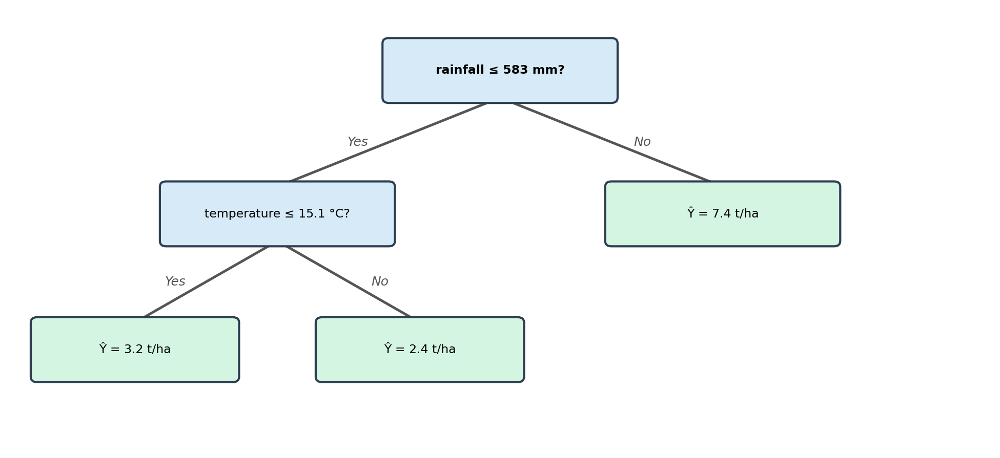
We can continue adding nodes to our tree in this manner until a stopping criterion is reached. For example, maximu depth, or a minimum number of observations within each region.
Check-in
Where would this algorithm end if we kept adding nodes and subdividing the regions without any stopping criterion?
Discussion
Eventually, the algorithm would subdivide the regions until most observations are in their own individual region. The tree would then perfectly predict every training observation, but it would be memorizing the data rather than learning the underlying pattern. This means predictions on new observations would be poor: a classic case of overfitting!
Dealing with overfitting
A fully-grown decision tree will perfectly fit the training data but will generalize very poorly to new observations. This is the classic overfitting problem: high variance, low bias.
The figure below shows decision regions for trees of increasing depth. Notice how the boundaries become increasingly specific to the training data as depth grows.
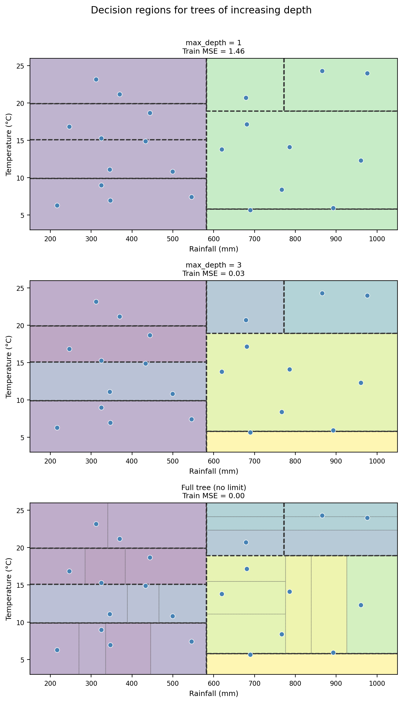
Check-in
Looking at the four trees above:
- The full tree has a training MSE of 0.00. What does this tell us about how well it fits the training data?
- Would you expect the full tree to perform better or worse than the depth-3 tree on new, unseen data? Why?
- What are two approaches you could use to control the complexity of a decision tree?
Discussion
A training MSE of 0 means the full tree essentially memorizes the training data. Every training observation falls in its own leaf and we have a perfect predictor for this specific training data.
The full tree would likely perform worse on new data. It has memorized the noise in the training set (high variance) rather than learning the underlying pattern. The depth-2 tree, with simpler boundaries, captures the main data structure without overfitting to noise.
Two common intuitive approaches are:
- Maximum depth: limit how many levels the tree can grow
- Minimum samples per leaf: stop splitting when a region has too few observations
Adjusting the maximum depth a tree can have or a minimum number of observations per leaf at which to stop subdividing are both ways to avoid overfitting our decision tree. These two approaches introduce a hyperparemeter (maximum depth, minimum samples) that controls the complexity vs. fit tradeoff.
Check-in
How would cross-validation be applied to find the best depth and samples per leaf values?
Discussion
Compute the CV-MSE for a grid of depth and samples per leaf values, compare which combination of parameters give the lowest error and choose this as the parameters for the tree.
Classification trees
Decision trees can also be applied to classification problems, where the response variable is a class label rather than a numerical value. In this case we call them classification trees.
A guiding dataset
We will use a second small dataset of 22 ecological sites. The predictors are the same (rainfall and temperature), but the response is now the site’s biome type: forest, grassland, or desert.
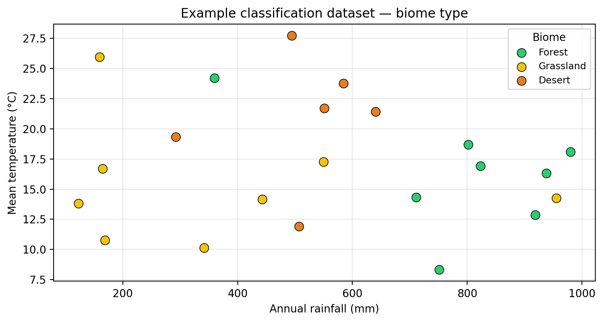
What is a classification tree?
A classification tree has the same structure as a regression tree (root, internal nodes, branches, and leaf nodes) but makes categorical predictions instead of numerical ones.
For a classification tree, each leaf node predicts the majority class among the training observations that reach that leaf. This is called a majority vote.
The depth-2 classification tree fitted on the example data looks like this:
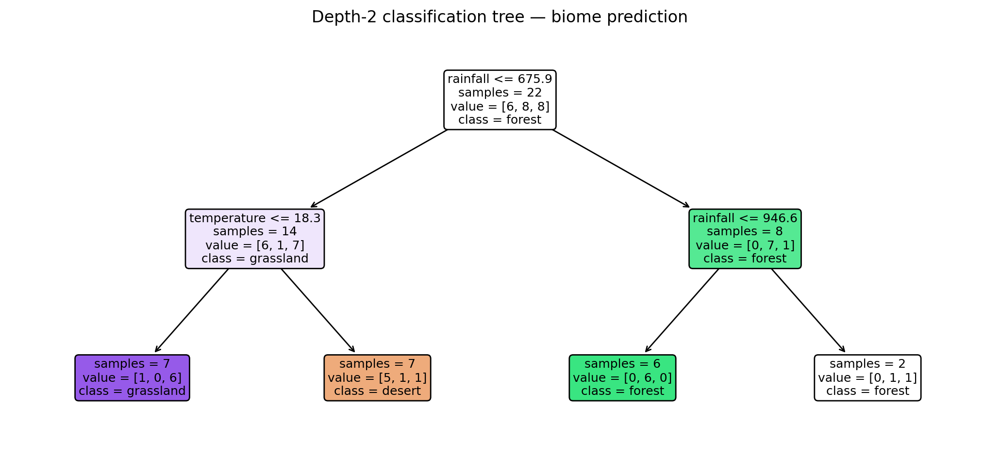
Check-in
Use the classification tree above to predict the biome type for a new site with rainfall = 500 mm and temperature = 15°C. Trace your path from the root to the leaf.
Discussion
- Root: Is rainfall 500 mm ≤ 675.9 mm? Yes. So this observation goes into in the “yes” left branch (low rainfall).
- Internal node: Is temperature of 15°C ≤ 18.3 °C? Yes. So this observation goes into in the “yes” left branch (low temperature).
- Leaf: The majority class in this leaf is grassland.
From decision boundaries to decision trees
Just like regression trees, classification trees divide the predictor space into rectangular regions. The figure below shows the decision regions for the depth-2 classification tree:

Fitting a classification tree
A classification tree is fitted by:
Dividing the predictor space into \(J\) non-overlapping regions \(R_1, \ldots, R_J\).
Predicting the majority class among training observations in each region \(R_j\).
As with regression trees, recursive binary splitting is used to find the regions, but the criterion for measuring split quality is different since we cannot use RSS for classification. Instead, we measure the impurity of the resulting regions. Intuitively, this is because we are often interested not only in the predicted class but also in the class proportions at each leaf (the fraction of training observations belonging to each class). These proportions give a sense of the confidence of the prediction. A leaf where 95% of observations share the same class is more reliable than one with a 60/40 split.
Check-in
Looking at the classification tree, which leaf has the most confident predictions? Which leaf would you say is the most “pure” and why?
Discussion
The forest leaf (rightmost, green). All training observations that fall into that region belong to the same class — forest — so the predicted class proportion is 1.0 for forest and 0.0 for all other classes. This means the tree is maximally confident there: there is no ambiguity in the prediction. In contrast, the other leaves contain a mix of classes, making their predictions less reliable.
At each step, recursive binary splitting searches for the variable and threshold that produce the purest regions.
A common splitting criterion for classification trees is the Gini impurity index, a measure of how mixed the classes are in a given region. A region where all observations belong to the same class has a Gini impurity of 0 (perfectly pure). The more evenly the observations are spread across classes, the higher the impurity.
Entropy is another common impurity measure that behaves similarly and tends to produce very similar trees in practice.
Comparing trees with linear models
Decision trees and linear models capture fundamentally different types of relationships between predictors and response:
- Linear models (regression, ridge, lasso): assume that the response changes smoothly and approximately linearly with the predictors.
- Decision trees make no such assumption: they partition the predictor space into rectangular regions and assign a constant prediction within each region.
As a result, trees naturally capture nonlinear, step-like relationships that linear models cannot fit well, while linear models perform better when the true relationship is approximately linear and smooth.
The example below shows a dataset where the response Y depends on temperature in a step-function pattern: low below 10°C, high between 10°C and 25°C, and low again above 25°C. A linear model fits a single straight line that is a poor approximation everywhere; a depth-2 tree captures the three-step structure almost perfectly.

The table below summarizes the key advantages and disadvantages of decision trees compared to linear models:
| Decision Trees | Linear Models | |
|---|---|---|
| Interpretability | Very high, easy to visualize and explain | Moderate, coefficients can be interpreted |
| Nonlinear relationships | Handles them naturally | Requires feature engineering (e.g., polynomial terms) |
| Prediction accuracy | Often lower than other methods | Competitive when the true relationship is linear |
| Variance | High — sensitive to small changes in training data | Generally lower |
| Variable selection | Implicit (splits only on useful variables) | Requires explicit methods (e.g., lasso) |
References
James, Gareth, Daniela Witten, Trevor Hastie, Robert Tibshirani, and Jonathan E. Taylor. 2023. An Introduction to Statistical Learning: With Applications in Python. Springer Texts in Statistics. Cham: Springer.